211 — CloudWatch, X-Ray y observabilidad como código
Parte: 17 — AWS: arquitectura, automatización y operación en producción
Nivel: avanzado · Horas estimadas: 4
Laboratorio: observability · Estado: EXECUTABLE_CORE
🎯 Propósito
Montar observabilidad en AWS que sirva para diagnosticar y no para decorar, y declararla como código junto al servicio que la produce. La clase cubre registros estructurados con su coste —que en la clase 207 resultó ser la segunda partida de la factura—, métricas propias sin arruinarse en dimensiones, trazado distribuido con muestreo, y la parte que decide si esto funciona: la alerta se define en el mismo cambio que el servicio, o no existe.
📚 Resultados de aprendizaje
Al finalizar podrás:
- Emitir registros estructurados con contexto y controlar su coste.
- Publicar métricas propias sin multiplicar el gasto por dimensiones.
- Trazar peticiones extremo a extremo con muestreo razonable.
- Declarar paneles, objetivos y alertas como código.
- Distinguir lo que hay que vigilar de lo que solo hay que poder consultar.
🧩 Conceptos centrales
| Concepto | Comprensión verificable |
|---|---|
registro estructurado |
Línea en formato de datos con campos consultables, no texto libre. |
métrica de formato incrustado |
Métrica publicada dentro de un registro, sin llamada aparte ni coste de API. |
dimensión |
Etiqueta de una métrica. Cada combinación distinta es una métrica facturable. |
cardinalidad |
Número de valores distintos de una dimensión. Alta cardinalidad multiplica el coste. |
traza |
Registro del recorrido de una petición por los servicios, con tiempos por tramo. |
observabilidad como código |
Paneles, objetivos y alertas declarados junto al servicio y desplegados con él. |
🧠 Modelo mental
AWS se aprende como una progresión operativa: identidad federada, infraestructura declarativa, entrega, señales, recuperación y costo controlado.
Aplicado a esta clase, separa siempre cuatro planos: intención (qué necesita el usuario), configuración (qué declaramos), estado observado (qué existe de verdad) y evidencia (cómo sabemos que cumple). Confundirlos produce diseños que se ven correctos en un diagrama pero fallan al operar.
🗺️ Flujo de razonamiento

📖 Desarrollo
1. Registros: estructura y coste
En AWS los registros se cobran por ingesta y por almacenamiento, y la ingesta suele ser la partida sorpresa.
LO PRIMERO: ESTRUCTURA
✗ "Error procesando pedido 4471 del cliente 123"
✓ {"nivel":"error","mensaje":"fallo al confirmar",
"pedido":"4471","cliente":"123",
"traza":"1-65f...","servicio":"pedidos",
"version":"1.4.2","duracion_ms":412}
→ el primero se busca con expresiones regulares y falla
→ el segundo se consulta con filtros por campo
Y el contexto que debe llevar toda línea:
identificador de traza ← el que une todo clase 121
servicio y versión
entorno
identificador de la petición
identificador del usuario o del inquilino, si aplica
y la duración, cuando la operación termina
El coste, con los tres controles que lo dominan:
1 NIVEL POR ENTORNO
desarrollo depuración
producción información y errores; depuración activable
por variable sin redesplegar
→ registrar cada petición con su cuerpo en producción es
el error más caro y el más común
2 MUESTREO DE LO CORRECTO
el 100 % de los errores
el 1-5 % de las peticiones correctas
→ y el 100 % de las peticiones de un usuario concreto
cuando se está diagnosticando, activable
3 CADUCIDAD
✗ por defecto, muchos grupos se crean sin caducidad
✓ 14-30 días en producción, y lo que haga falta
conservar se exporta a almacenamiento barato
→ función de aptitud: ningún grupo sin caducidad
clase 190
Y el dato de la clase 207, que justifica todo esto:
ingesta de registros 620 €/mes
almacenamiento 180 €/mes
cómputo de las funciones 410 €/mes
→ los registros costaban el doble que el cómputo
tras aplicar nivel, muestreo y caducidad 120 €/mes
Y una advertencia sobre lo que nunca debe ir a un registro:
contraseñas, testigos, claves
datos personales completos
números de tarjeta
cuerpos de petición sin filtrar
→ los registros se consultan por mucha gente y se conservan
→ y una captura de registros es un dato sensible
clase 189
2. Métricas propias y la trampa de las dimensiones
Las métricas de infraestructura vienen dadas. Las que importan —las de negocio y las de servicio— hay que publicarlas.
CÓMO PUBLICARLAS
✗ una llamada a la API de métricas por cada valor
→ latencia añadida en el camino crítico y coste por
llamada
✓ FORMATO INCRUSTADO: la métrica va dentro del registro
con una sección de metadatos
→ sin llamada, sin latencia, y el registro sirve además
como detalle
La trampa de las dimensiones, que produce facturas absurdas:
cada COMBINACIÓN distinta de dimensiones es una métrica
facturable
dimensiones valores métricas resultantes
servicio 8
ruta 24
código de estado 6
→ 8 × 24 × 6 = 1.152 métricas razonable
añade id_de_pedido con 400.000 valores
→ 460 millones de métricas desastre
REGLA
dimensión = algo de lo que quieras ver la EVOLUCIÓN
identificador = algo con lo que quieras BUSCAR
→ la evolución va a métricas; la búsqueda, a registros
Y las métricas que de verdad hacen falta, por servicio:
LAS CUATRO SEÑALES clase 121
latencia por percentil
tráfico
errores, separando los del cliente de los del sistema
saturación: el recurso que se agota primero
Y LAS DE NEGOCIO, que son las que se echan de menos
pedidos confirmados por minuto
pagos rechazados
retraso entre el hecho y su procesamiento clase 210
→ una caída de pedidos confirmados detecta cosas que
ninguna métrica técnica ve ley 15
Y una advertencia sobre los percentiles:
las métricas agregadas por minuto no permiten calcular el
percentil real del periodo mayor
→ el «p99 del día» calculado a partir de p99 por minuto no
es el p99 del día
→ para percentiles exactos hacen falta métricas con
distribución o el detalle en registros
Las trazas, con la decisión de muestreo:
el trazado distribuido muestra el recorrido de una petición
y cuánto tarda cada tramo clase 121
muestreo
100 % de las peticiones con error
100 % de las lentas (por encima de un umbral)
1-5 % del resto
→ trazar todo cuesta mucho y aporta poco
y lo que hay que propagar
la cabecera de traza a TODAS las llamadas, incluidas las
asíncronas: por la cola, dentro del mensaje
→ sin esto, la traza se corta en el primer salto
asíncrono clase 210
3. Declararlo como código
La observabilidad montada a mano por la consola envejece y desaparece. Declararla junto al servicio es lo que la mantiene viva.
QUÉ SE DECLARA
el grupo de registros, con su caducidad
las métricas y sus filtros
el panel del servicio
los objetivos de nivel de servicio
las alertas, con su destino y su procedimiento enlazado
→ todo en la misma plantilla que el servicio
QUÉ SE GANA
un servicio nuevo nace observable clase 171
las alertas se revisan en la misma propuesta de cambio
y al retirar el servicio, se retira su observabilidad
ley 23
Y la regla que lo hace efectivo:
FUNCIÓN DE APTITUD clase 190
ningún servicio se despliega sin
grupo de registros con caducidad
las cuatro señales publicadas
al menos un objetivo declarado
al menos una alerta con procedimiento enlazado
→ y el carril fácil lo trae hecho, así que casi nunca falla
Alertas: qué merece despertar a alguien.
ALERTA (despierta)
el objetivo de nivel de servicio se está consumiendo
demasiado rápido clase 125
el flujo crítico no funciona
la cola de fallidos tiene mensajes antiguos clase 210
el retraso de proceso supera el acordado
AVISO (revisar en horario)
tendencias, saturación creciente, coste
NI UNA NI OTRA
«la CPU está al 80 %» ← no es un síntoma de usuario
«hubo un error» ← los errores ocurren
«un despliegue terminó»
Y las alertas que este programa ha demostrado que faltan siempre:
ALERTA POR AUSENCIA
«esta función no se ha ejecutado en N minutos»
→ un trabajo programado que deja de dispararse no genera
ningún error ley 13
ALERTA POR ANTIGÜEDAD
«el mensaje más viejo de la cola de fallidos supera 1 h»
«este certificado no se renueva desde hace 45 días»
clase 196
«este dispositivo lleva 2 h sin reportar» clase 203
Y la comprobación de que la alerta funciona:
provocar la condición y ver si llega, a quien tiene que
llegar ley 22
→ en este programa, las alertas que salían a canales sin
suscriptores han aparecido en cuatro clases distintas
Y una decisión sobre destino:
las alertas van a UN canal con guardia, no a canales
nuevos por servicio
→ crear un canal por servicio garantiza que alguno quede
sin nadie ley 15
4. Consultar, y lo que no hay que vigilar
Hay una diferencia importante entre lo que hay que vigilar y lo que hay que poder consultar.
VIGILAR pocas cosas, con alerta, revisadas
CONSULTAR mucho, sin alerta, disponible cuando haga falta
→ confundirlos produce cientos de alertas y ningún
diagnóstico clase 125
Las consultas que hay que tener preparadas, no improvisar:
«dame todas las líneas de esta traza»
«dame los errores de este servicio en la última hora,
agrupados por tipo»
«dame las peticiones de este usuario»
«dame las peticiones más lentas y qué tramo domina»
«compara esta hora con la misma hora de ayer»
→ guardadas y enlazadas desde el procedimiento de la alerta
→ improvisar consultas durante un incidente cuesta minutos
que no se tienen clase 127
Y la correlación, que es lo que hace útil todo lo demás:
de una alerta → al panel del servicio
del panel → a las trazas del periodo
de una traza → a los registros de esa petición
de los registros → a la línea de cambios: ¿qué se desplegó?
clase 122
→ si esa cadena tiene un eslabón roto, el diagnóstico se
hace a ojo
Los objetivos de nivel de servicio, declarados:
por flujo de usuario, no por componente clase 123
«el 99,5 % de las confirmaciones de pedido en menos de
800 ms, medidas en el borde»
con presupuesto de error y alerta por ritmo de consumo
→ y esa es la alerta que despierta, no el error suelto
Y la lista de comprobación de la clase:
☐ todos los registros son estructurados
☐ toda línea lleva identificador de traza, servicio,
versión y entorno
☐ el nivel de registro depende del entorno y se puede
cambiar sin redesplegar
☐ hay muestreo de las peticiones correctas
☐ ningún grupo de registros carece de caducidad
☐ no se registran secretos ni datos personales completos
☐ las métricas se publican en formato incrustado
☐ ninguna dimensión tiene cardinalidad alta
☐ hay métricas de negocio, no solo técnicas
☐ la cabecera de traza se propaga también por las colas
☐ el muestreo de trazas cubre el 100 % de errores y lentas
☐ paneles, objetivos y alertas están en la plantilla del
servicio
☐ hay alertas por ausencia y por antigüedad
☐ cada alerta tiene procedimiento enlazado
☐ las alertas se han probado provocando la condición
☐ las consultas de diagnóstico están guardadas
Y el cierre que enlaza con la clase siguiente: hasta aquí todo ha sido sin servidores. Cuando la carga no encaja en ese modelo —procesos largos, dependencias pesadas, control del entorno— aparecen los contenedores. Registro de imágenes, orquestación gestionada y escalado es la materia de la clase 212.
🔬 Ejemplo trabajado
CloudShop monta la observabilidad de su plataforma. Lo que sigue es la factura de registros que disparó el proyecto, la métrica que costaba 3.100 € al mes por una dimensión, y la alerta que llevaba ocho meses sin llegar a nadie.
El punto de partida:
coste mensual de observabilidad 4.980 €
ingesta de registros 2.140 €
almacenamiento de registros 680 €
métricas propias 1.740 €
trazas 420 €
y lo que se obtenía a cambio
paneles 31
abiertos en el último mes 4
alertas configuradas 89
disparadas en el último mes 612
que resultaron accionables 41 (6,7 %)
Los registros: dónde estaba el gasto.
ingesta por servicio
api-pedidos 1.190 €
api-catalogo 420 €
procesador-eventos 310 €
resto 220 €
qué registraba api-pedidos
cada petición, con el cuerpo completo de entrada y salida
cada consulta a la base, con sus parámetros
cada llamada saliente, con cabeceras
y en nivel de depuración, porque nunca se cambió al
pasar a producción
volumen 1,4 TB/mes
líneas por petición 14
Y dos hallazgos al revisar el contenido:
1 los cuerpos de petición incluían el testigo de
autorización completo
→ 41 personas tenían acceso de lectura a los registros
→ un testigo válido en texto plano, conservado sin
caducidad clase 189
2 el grupo de registros no tenía caducidad
→ 19 meses de historia acumulada
→ 8,4 TB almacenados, de los cuales lo consultado en el
último año eran los últimos 11 días
Las correcciones:
nivel por entorno depuración → información
con variable para activar depuración por 30 min sin
redesplegar
muestreo de peticiones correctas 100 % → 3 %
errores 100 %, siempre
cuerpos eliminados; solo campos
seleccionados
testigos y datos personales filtrados en el emisor
caducidad sin límite → 21 días
exportación de lo necesario a almacenamiento barato
líneas por petición 14 → 2
volumen 1,4 TB → 96 GB/mes
ingesta 2.140 € → 165 €
almacenamiento 680 € → 40 €
La métrica que costaba 3.100 €… que resultaron ser 1.740 €.
al desglosar el coste de métricas propias
métrica dimensiones series
pedidos_procesados servicio, ruta, estado 144
latencia_operacion servicio, operacion 320
errores_por_tipo servicio, tipo 96
tiempo_confirmacion servicio, ID_DE_PEDIDO 412.000 ←
la última la había añadido un equipo para «poder ver el
tiempo de cada pedido»
→ 412.000 series, cada una con muy pocos puntos
→ 1.410 € de los 1.740 €
corrección
el tiempo por pedido va al REGISTRO, con el identificador
como campo consultable
la MÉTRICA queda con dimensiones servicio y tipo de
pedido: 24 series
y para ver un pedido concreto, se consulta el registro
coste de métricas 1.740 € → 290 €
Y la regla que quedó escrita:
¿quieres ver la EVOLUCIÓN de esto agrupado? → métrica
¿quieres BUSCAR un caso concreto? → registro
→ y una función de aptitud que rechaza dimensiones con más
de 200 valores previstos clase 190
La alerta que llevaba ocho meses sin llegar a nadie.
al auditar las 89 alertas
con destino a un canal con guardia 34
con destino a canales creados por equipos 41
de ellos, canales SIN suscriptores 11
con destino a un buzón de correo compartido 14
→ el buzón tenía 12.400 correos sin leer
y entre las 11 de canales vacíos
«la cola de fallidos de facturación tiene mensajes»
→ la del incidente de la clase 210, que llevaba 8 meses
disparándose sin que nadie la viera ley 15
corrección
destino único: canal de guardia por turno
las 41 alertas de equipos se revisaron
→ 23 se convirtieron en avisos de horario laboral
→ 12 se retiraron por no ser accionables
→ 6 pasaron a alerta real
prueba de extremo a extremo de cada alerta:
provocar la condición y comprobar que llega
→ 7 de 40 no llegaron a la primera ley 22
La observabilidad como código.
la plantilla de cada servicio incluye ahora
grupo de registros con caducidad
filtros de métrica
panel del servicio
objetivo de nivel de servicio
alertas con procedimiento enlazado
y la plantilla de servicio nuevo lo trae hecho
→ en 6 meses se crearon 9 servicios
→ 9 de 9 nacieron con panel, objetivo y alerta
→ antes, la media era de 5 semanas hasta tener alerta,
y 3 de 11 servicios nunca la tuvieron
función de aptitud
«ningún servicio sin grupo con caducidad, cuatro señales,
objetivo y alerta con procedimiento»
fallos en 6 meses 2
→ los 2, servicios antiguos, corregidos
La cadena de diagnóstico, comprobada con un incidente real:
03:14 alerta: el objetivo de confirmación de pedido está
consumiendo presupuesto de error 14× más rápido de
lo normal
03:14 el mensaje enlaza el panel del servicio
03:15 el panel muestra p99 disparado desde las 03:02
03:15 la línea de cambios: despliegue de precios a las
03:01 clase 122
03:16 las trazas del periodo: el tramo lento es la llamada
a precios
03:17 los registros de esas trazas: error de conexión al
almacén de precios
03:18 reversión automática ya en curso; confirmada
03:22 restablecido
tiempo hasta identificar la causa 4 min
antes de este proyecto, la media era de 52 min
El resultado:
```text antes después coste de observabilidad 4.980 € 620 € ingesta de registros 1,4 TB 96 GB series de métricas 412.500 584 alertas configuradas 89 63 disparadas al mes 612 71 accionables 41 (6,7 %) 63 (89 %) alertas que no llegaban a nadie 11 0 servicios sin panel ni objetivo 3 0 tiempo medio hasta identificar causa 52 min 4 min testigos en texto plano en registros sí no
**La lección que esta clase deja**: de casi cinco mil euros mensuales de observabilidad, **una sola dimensión con cuatrocientos mil valores costaba mil cuatrocientos**, y lo que ese equipo quería —ver el tiempo de un pedido concreto— se resuelve con un campo en el registro. Los registros costaban más que el cómputo y **contenían testigos válidos en texto plano**. Y de ochenta y nueve alertas, once salían a canales sin nadie, incluida la de la cola de fallidos que ocho meses después provocó el incidente de la clase 210.
## 🧪 Laboratorio guiado
Ejecuta desde la raíz:
```bash
python classes/part-17-aws-production-architecture/211-cloudwatch-x-ray-y-observabilidad-como-codigo/lab.py
El laboratorio selecciona el motor de práctica observability y produce
lab_result.json. El escenario, sus comprobaciones y el artefacto esperado corresponden a
esta clase; no requiere credenciales y deja explícito qué debe revalidarse en un sandbox real.
- Lee
exercise.stepsy formula una predicción antes de ejecutar. - Ejecuta la práctica y verifica todos los elementos de
checks. - Provoca el caso de
negative_testy explica la señal observada. - Materializa
aws-observabilityenevidence/usando la plantilla indicada. - Para proveedor real, sigue
sandbox.requires, registra costo y ejecutadestroy.
Evidencia esperada
El artefacto principal es telemetría correlacionada con una pregunta operativa. Además, la entrega debe incluir el comando ejecutado, la salida estructurada y una conclusión que no exceda lo observado.
🏆 Reto verificable
Construye aws-observability para el caso CloudShop. Incluye una alternativa descartada,
un supuesto que pueda falsarse, una prueba de fallo y una decisión de rollback.
✅ Criterio de aceptación
- [ ]
lab.pytermina con código 0 y genera JSON válido. - [ ] La entrega conecta al menos tres requisitos con mecanismos verificables.
- [ ] Existe una prueba positiva y una prueba negativa con evidencia.
- [ ] Seguridad, costo y operación aparecen como decisiones, no como anexos.
- [ ] Se declara una limitación y una condición que obligaría a revisar el diseño.
- [ ] Otra persona puede repetir el recorrido sin conocimiento tácito.
⚠️ Errores frecuentes
| Síntoma | Causa probable | Corrección |
|---|---|---|
| La factura de registros supera a la de cómputo | Nivel de depuración en producción, cuerpos completos y sin muestreo ni caducidad | Nivel por entorno activable sin redesplegar, muestreo de las peticiones correctas, campos seleccionados y caducidad obligatoria. |
| El coste de métricas se dispara sin explicación | Una dimensión de alta cardinalidad crea una serie por valor | Las dimensiones son para ver evolución agrupada; lo que sirve para buscar un caso concreto va al registro. |
| La traza se corta al llegar a un proceso asíncrono | La cabecera de traza no se propaga dentro del mensaje de la cola | Incluye el contexto de traza en el mensaje y recupéralo en el consumidor. |
| Una alerta lleva meses disparándose sin que nadie actúe | Sale a un canal creado por un equipo y sin suscriptores | Destino único con guardia y prueba de extremo a extremo provocando la condición. |
| Un servicio lleva semanas en producción sin panel ni alerta | La observabilidad se monta a mano después del despliegue | Declárala en la plantilla del servicio y exígela con una función de aptitud; el carril por defecto debe traerla hecha. |
| Los registros contienen testigos o datos personales | Se registran cuerpos completos sin filtrar | Filtra en el emisor, registra solo campos seleccionados y trata el archivo de registros como dato sensible. |
🛡️ Seguridad, ética y costo
Trabaja con cuentas propias o sandboxes autorizados. No publiques secretos, identificadores reales ni datos personales. Antes de crear recursos pagos define presupuesto, etiquetas y comando de destrucción; después verifica que no queden recursos huérfanos. Los ejemplos locales enseñan contratos, pero no certifican cumplimiento ni disponibilidad de producción.
❓ Preguntas de comprobación
- ¿Qué campos debe llevar toda línea de registro y por qué?
- ¿Qué distingue algo que debe ser dimensión de algo que debe ser campo de registro?
- ¿Qué muestreo de trazas resulta razonable y por qué no se traza todo?
- ¿Qué dos tipos de alerta faltan casi siempre y qué detectan?
- ¿Qué eslabones tiene la cadena de diagnóstico desde la alerta hasta la causa?
🔗 Referencias
- AWS (2025). CloudWatch embedded metric format. https://docs.aws.amazon.com/AmazonCloudWatch/latest/monitoring/CloudWatch_Embedded_Metric_Format.html
- AWS (2025). CloudWatch Logs Insights query syntax. https://docs.aws.amazon.com/AmazonCloudWatch/latest/logs/CWL_QuerySyntax.html
- AWS (2025). AWS X-Ray sampling rules. https://docs.aws.amazon.com/xray/latest/devguide/xray-console-sampling.html
- OpenTelemetry (2025). Context propagation. https://opentelemetry.io/docs/concepts/context-propagation/
- Google (2018). The Site Reliability Workbook: alerting on SLOs. https://sre.google/workbook/alerting-on-slos/
- Documentación oficial vigente del servicio implementado; registra URL y fecha de consulta.
📥 Descargar: Parte 17 en PDF · Recorrido de AWS en PDF · Manual integral